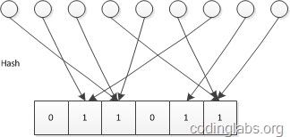
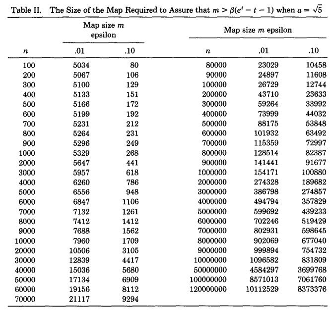

在上一篇文章中，我们知道传统的精确基数计数算法在数据量大时会存在一定瓶颈，瓶颈主要来自于数据结构合并和内存使用两个方面。因此出现了很多基数估计的概率算法，这些算法虽然计算出的结果不是精确的，但误差可控，重要的是这些算法所使用的数据结构易于合并，同时比传统方法大大节省内存。
在这一篇文章中，我们讨论Linear Counting算法。
简介
Linear Counting（以下简称LC）在1990年的一篇论文“A linear-time probabilistic counting algorithm for database applications”中被提出。作为一个早期的基数估计算法，LC在空间复杂度方面并不算优秀，实际上LC的空间复杂度与上文中简单bitmap方法是一样的（但是有个常数项级别的降低），都是O($N_{max}$)，因此目前很少单独使用LC。不过作为Adaptive Counting等算法的基础，研究一下LC还是比较有价值的。
基本算法
思路
LC的基本思路是：设有一哈希函数H，其哈希结果空间有m个值（最小值0，最大值m-1），并且哈希结果服从均匀分布。使用一个长度为m的bitmap，每个bit为一个桶，均初始化为0，设一个集合的基数为n，此集合所有元素通过H哈希到bitmap中，如果某一个元素被哈希到第k个比特并且第k个比特为0，则将其置为1。当集合所有元素哈希完成后，设bitmap中还有u个bit为0。则：
$$\hat{x} = -mlog\frac{u}{m}$$
为n的一个估计，且为最大似然估计（MLE）。
示意图如下：

推导及证明
（对数学推导不感兴趣的读者可以跳过本节）
由上文对H的定义已知n个不同元素的哈希值服从独立均匀分布。设Aj为事件“经过n个不同元素哈希后，第j个桶值为0”，则：
$$P(A_j)=(1−\frac{1}{m})^n$$
又每个桶是独立的，则u的期望为：
$$E(u)=\sum_{j=1}^{m}P(A_j)=m(1−\frac{1}{m})^n=m((1+\frac{1}{−m})^{−m})^{-\frac{n}{m}}$$
当n和m趋于无穷大时，其值约为$me^{−\frac{n}{m}}$
由：$$E(u)=me^{−\frac{n}{m}}$$ 得：$$n=−mlog\frac{E(u)}{m}$$
显然每个桶的值服从参数相同0-1分布，因此u服从二项分布。由概率论知识可知，当n很大时，可以用正态分布逼近二项分布，因此可以认为当n和m趋于无穷大时u渐进服从正态分布。
因此u的概率密度函数为：$$f(x)=\frac{1}{\sigma\sqrt{2\pi}}e^{−\frac{(x−\mu)^2}{2\sigma^2}}$$
由于我们观察到的空桶数u是从正态分布中随机抽取的一个样本，因此它就是μ的最大似然估计（正态分布的期望的最大似然估计是样本均值）。
又由如下定理：
设$f(x)$是可逆函数, $\hat{x}$是x的最大似然估计，则$f(\hat{x})$是$f(x)$的最大似然估计。
又$−mlog\frac{x}{m}$是可逆函数，则$\hat{n}=−mlog\frac{u}{m}$是$n=−mlog\frac{E(u)}{m}$的最大似然估计。
偏差分析
下面不加证明给出如下结论：
$$Bias(\frac{\hat{n}}{n})=E(\frac{\hat{n}}{n})−1=\frac{e^t−t−1}{2n}$$
$$StdError(\frac{\hat{n}}{n})=\frac{\sqrt{m}(e^t−t−1)^{1/2}}{n}$$
其中t=n/m
以上结论的推导在“A linear-time probabilistic counting algorithm for database applications”可以找到。
算法应用
在应用LC算法时，主要需要考虑的是bitmap长度m的选择。这个选择主要受两个因素的影响：基数n的量级以及容许的误差。这里假设估计基数n的量级大约为N，允许的误差为ϵ，则m的选择需要遵循如下约束。
误差控制
这里以标准差作为误差。由上面标准差公式可以推出，当基数的量级为N，容许误差为$\epsilon$时，有如下限制：
$$m>\frac{e^t−t−1}{(\epsilon{t})^2}$$
将量级和容许误差带入上式，就可以得出m的最小值。
满桶控制
由LC的描述可以看到，如果m比n小太多，则很有可能所有桶都被哈希到了，此时u的值为0，LC的估计公式就不起作用了（变成无穷大）。因此m的选择除了要满足上面误差控制的需求外，还要保证满桶的概率非常小。
上面已经说过，u满足二项分布，而当n非常大，p非常小时，可以用泊松分布近似逼近二项分布。因此这里我们可以认为u服从泊松分布（注意，上面我们说u也可以近似服从正态分布，这并不矛盾，实际上泊松分布和正态分布分别是二项分布的离散型和连续型概率逼近，且泊松分布以正态分布为极限）：
当n、m趋于无穷大时：
$$Pr(u=k)=(\frac{\lambda{k}}{k!})e^{−\lambda}$$
因此：
$$Pr(u=0)<e^{−5}=0.007$$
由于泊松分布的方差为λ，因此只要保证u的期望偏离0点$\sqrt{5}$的标准差就可以保证满桶的概率不大约0.7%。因此可得：
$$m>5(e^t−t−1)$$
综上所述，当基数量级为N，可接受误差为$\epsilon$，则m的选取应该遵从
$$m>\beta{(e^t−t−1)}$$
其中$β=max(5,1/(\epsilon{t})^2)$
下图是论文作者预先计算出的关于不同基数量级和误差情况下，m的选择表：

可以看出精度要求越高，则bitmap的长度越大。随着m和n的增大，m大约为n的十分之一。因此LC所需要的空间只有传统的bitmap直接映射方法的1/10，但是从渐进复杂性的角度看，空间复杂度仍为$O(N_{max})$。
合并
LC非常方便于合并，合并方案与传统bitmap映射方法无异，都是通过按位或的方式。
小结
这篇文章主要介绍了Linear Counting。LC算法虽然由于空间复杂度不够理想已经很少被单独使用，但是由于其在元素数量较少时表现非常优秀，因此常被用于弥补LogLog Counting在元素较少时误差较大的缺陷，实际上LC及其思想是组成HyperLogLog Counting和Adaptive Counting的一部分。
在下一篇文章中，我会介绍空间复杂度仅有$O(log_2(log_2(N_{max})))$的基数估计算法LogLog Counting。